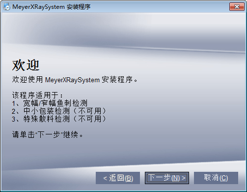
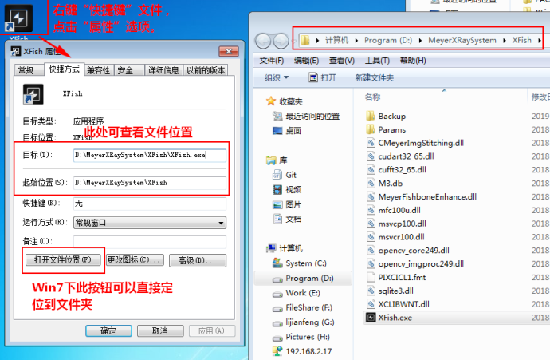
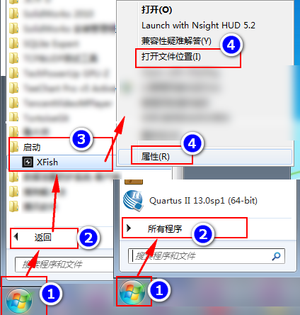
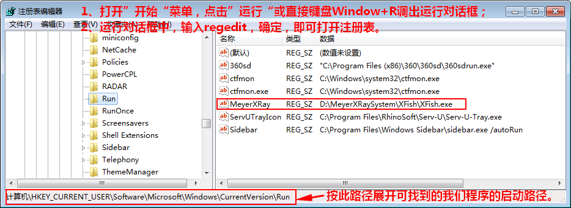

1 上位机软件的两种安装方式及启动原理
上位机的安装方式一共两种：
- 传统方式：绿色文件包。执行程序exe和所有的文件均放在一个文件夹里面，需要拷贝文件夹到目标盘符；并发送快捷键到桌面，同时拷贝快捷键到启动文件夹实现自启动。特别的，对于使用CF卡的老机器，提前已将程序依赖文件放到了系统目录，因此直接将exe放到启动文件夹实现自启动。（知识点：Windows下程序查找其所需的依赖文件如dll等的机制，优先查找其所在根目录，找不到就会到系统目录system32下找）。
- 安装方式：只提供一个exe安装包，通过一步步傻瓜式操作安装，和平常安装下载的软件一样。鱼刺机和包装机软件从1.01版以后均采用此方式。默认安装到D盘；自动在桌面放置快捷键；自动在注册表设置自启动。 
2 如何根据启动项反向软件并手动更换升级
Windows有多种自启动方式，我部门目前用过3种：
- 启动文件夹：通过在“开始”菜单->“所有程序”->“启动”中放置待自启动的程序快捷方式实现启动引导。该方法在Windows中启动优先级低。
- 注册表Run：在HKEY_CURREN_USER\Software\Microsoft\Windows\CurrentVersion\Run中添加启动条目实现自启动。该方法启动优先级高。
- Shell方式：该方式较为复杂，仅安检机使用。该方法较为高级，启动优先级相比以上更高。
不论以上哪种安装方式，哪种启动，都可以按照以下方式查找。
2.1 通过快捷键反查
软件默认都在D盘根目录，且在桌面有快捷键。也请手动更换的人员维持该原则。
可通过桌面快捷键，或启动中快捷键（如果没有则一定是注册表Run启动），右键查看属性得知路径。如下2个图所示。


2.2 注册表查看
对于使用注册表Run实现自启动的软件，其位置在于注册表的HKEY_CURREN_USER\Software\Microsoft\Windows\CurrentVersion\Run中。
详细可参照下图。 
3 软件部署注意事项
- 手动升级，记得将原先程序打包备份，以便意外情况恢复，最好压缩包上注明日期。
- 不要将部署的文件夹和程序随意命名，和随意放置。
- 一台发货机器值在其上部署一种软件，其只在一处部署。